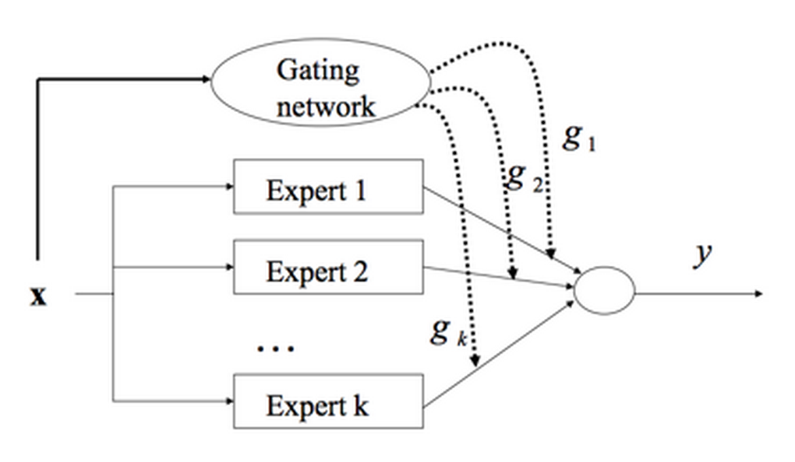
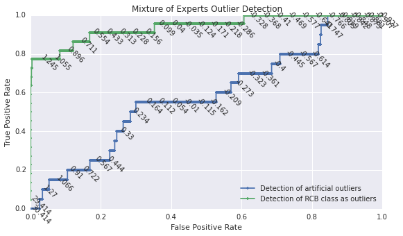
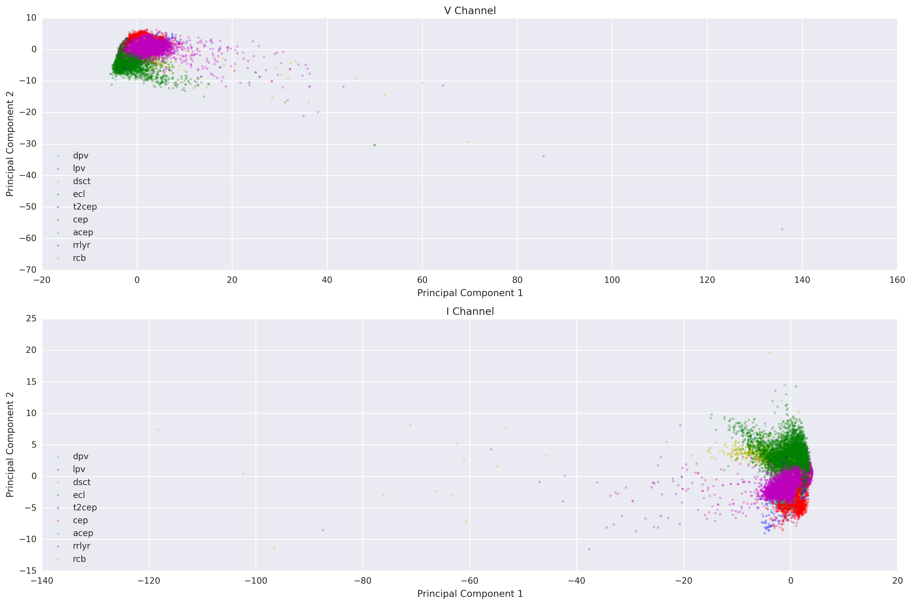
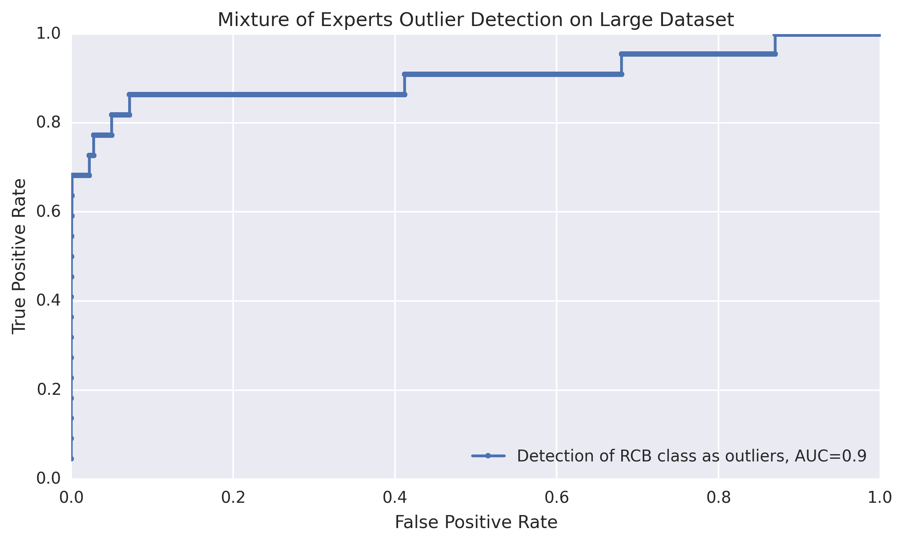
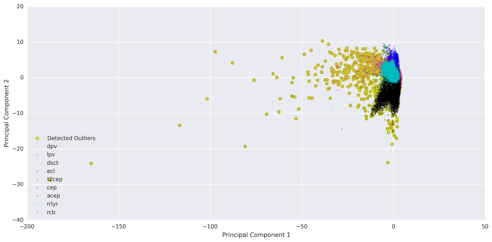

Mixture of Experts & Results
Introduction to the Mixture of Experts
With the mixture of experts approach, we assume that each outlier detection method performs best within a particular domain of the sample space. In this ensemble method, we combine the results from each method in a smart way so that the diversity of experts can make up for deficiencies in individual methods over particular domains. Therefore, the result of each expert is weighted by values generated based on the location of the point in the 57-dimensional space. The gating parameter $\eta_i$ for each expert $i$ must be trained.
Figure R1. Mixture of Experts. The result of each expert is weighted by values generated from a gating network. Both the gating network and the experts must be trained.
The gating probability $g_i^x$ is the weight assigned to each expert $i$ for data point $\vec{x}$. The weights are generated using a soft-max gating network: $$g_i^x= \frac{exp(\vec{\eta_i}^T \vec{x})}{\sum_{j=1}^k exp(\vec{\eta_j}^T \vec{x}) },$$ where $\vec{x}$ is a 57-dimensional data vector (one data point), and $\eta_i$ is the gating parameter for each expert $i$, with a total of $k$ experts. Thus, the outlierliness score $P_x$ for a particular data point $\vec{x}$ is: $$P_x = \sum_{i=1}^k g_i(\vec{\eta_j},\vec{x}) p_i(\vec{x}),$$ where $p_i(\vec{x})$ is the outlierliness score assigned to a particular data point $\vec{x}$ by expert/model $i$.
Results
A mixture of experts model was trained on the data set of 1913 objects, optimizing for the detection of the artificial and the rcb group outliers. The optimization was done using simulated annealing over the entire range of possible $\eta$ values.
{kind=link}
Figure R2. ROC for the combined mixture of experts outlier detection method. The combined model is able to perform just as well as the best individual expert in the detection of artificial outliers. It performs comparably to the best individual expert in the detection of rcb class outliers.
As shown above, the mixture of experts ensemble method is able to perform as well as the best individual outlier detection method for the artificial outliers. For the rcb class outliers, it does similarly to the top individual outlier detection methods. We cannot a priori expect the mixture to perform better than all the individual experts for both types of outlier detection (artificial and rcb) because we optimized both the rcb and the artificial outlier detection. The simultaneous optimization of two responses may have lead to compromises in the absolute performance for each specific outlier class.
Table R1 shows the performance as measured by area under the ROC curve (AUC) for each expert along with the performance of the mixture of experts. Again, since the mixture of experts is optimized for both artificial and rcb class outliers, it seems intuitive that the performance of detecting any one type of outlier may may not be as high as that for individual experts. However, it makes sense that the average AUC for the mixture of experts is highest. The mixture method still seems to be able to maintain high performance for the artificial outlier detection.
| Method | Artificial Outliers AUC | RCB Outliers AUC | Average AUC |
|---|---|---|---|
| KNN 1 I-channel | 0.85 | 0.94 | 0.90 |
| KNN 1 V-channel | 0.42 | 0.88 | 0.65 |
| KNN 2 I-channel | 0.50 | 0.95 | 0.73 |
| KNN 2 V-channel | 0.50 | 0.68 | 0.59 |
| SVM+JP I-channel | 0.78 | 0.91 | 0.85 |
| SVM+JP V-channel | 0.62 | 0.73 | 0.68 |
| LOCI I-channel | 0.30 | 0.28 | 0.29 |
| LOCI V-channel | 0.28 | 0.45 | 0.37 |
| Hyperplane I-channel | 0.78 | 0.78 | 0.78 |
| Hyperplane V-channel | 0.99 | 0.82 | 0.91 |
| Mixture of Experts | 0.99 | 0.89 | 0.94 |
Table R1. Area under the ROC curve (AUC) for various outlier detection methods. The AUC is a common single-number metric to compare between ROC curves (such as those seen in the Methods section). Bolded AUC values are from the individual outlier detection methods that did the best under each outlier detection task (either detecting artificial outliers or the rcb class as outliers).
{kind=link}
Figure R3. Data points and detected outliers on the PCA plane (I-channel). Detected outliers are outlied in yellow. The threshold 1.1 was chosen by eye such that the obvious outliers were identified, allowing only about 1% false positive rate. The false positive rate at this threshold is 1% (231 non-rcb objects) and the true postive rate is 68% (18/22 rcb objects).
As can be seen in Figure R3, the mixture of experts model is able to identify almost all of the objects in class rcb that appear to be far away from the other points on the PCA plane. With an arbitrary threshold (1.1) the false positive rate is 1% (231 non-rcb objects) and the true postive rate is 68% (18/22 rcb objects). Of course, depending on one's tolerance for type 1 or type 2 error, the threshold can be adjusted.
Application to Larger Data Set
We used the mixture of experts model trained with the 1913 outliers to detect outliers in the larger data set of 10000 light curves: 2693 from lpv, 648 from dsct, 2673 from ecl, 93 from t2cep, 1109 from cep, 38 from acep, 2637 from rrlyr, 22 from rcb, and 87 from dpv. This set includes the training set. Note that the number of rcb class outliers is the same as the training set, so this exercise will show the performance of the mixture model in identifying the rcb class while dealing with more non-outlier data. There is also an additional dpv class.
{kind=link}
Figure R4. ROC for the mixture of experts outlier detection method applied to larger dataset of 10000 objects. The mixture of experts model does a bit better in this scenario than in the training data scenario in identifying the rcb class outliers.
As Figure R4 shows, the mixture of experts model is readily applicable to larger data sets. It does fairly well in the detection of rcb class outliers (AUC = 0.90), performing as well as it did on the smaller training data set (AUC = 0.89).
{kind=link}
Figure R5. Large data set with detected outliers plotted on the PCA plane (I-channel). Detected outliers are outlied in yellow. The threshold 1.4 was chosen by eye such that the obvious outliers were identified, yet not many points in the main cluster were identified as outlier. The false positive rate at this threshold is 1% (1711 non-rcb class objects) and the true postive rate is 68.5% (19/22 rcb class objects).
As can be seen in Figure R5, the mixture of experts model is able to identify almost all of the objects in class rcb that appear to be far away from the other points on the PCA plane.
Next Steps
Future work should focus on the addition of more outlier detection "experts" to the model. In addition, the optimization of the gating parmeter $\eta$ in mixture of experts model may be optimized simultaneously with individual expert parameters using expectation maximization and stochastic gradient descent. In addition, we look to use our easily extensible code to extend our work to other domains - in particular, fraud detection in financial transaction networks, which we hope to look at next semester.